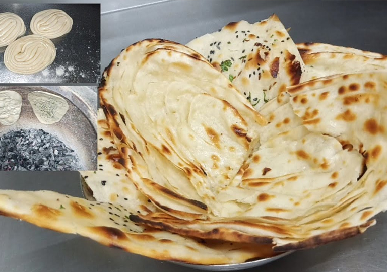
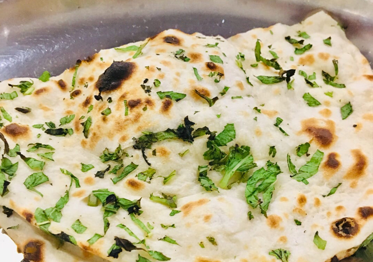
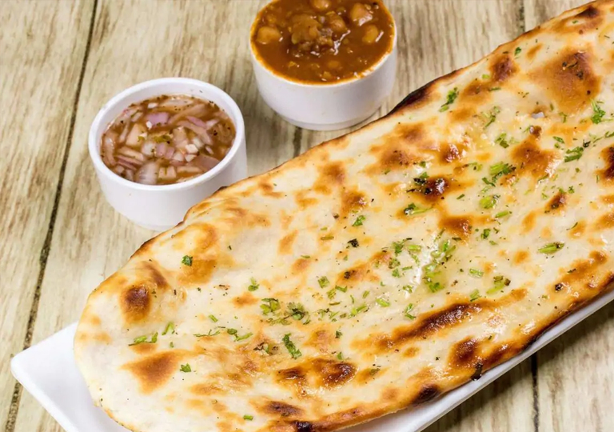
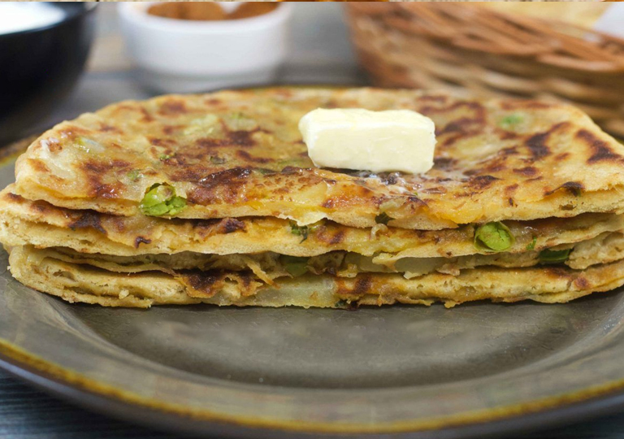
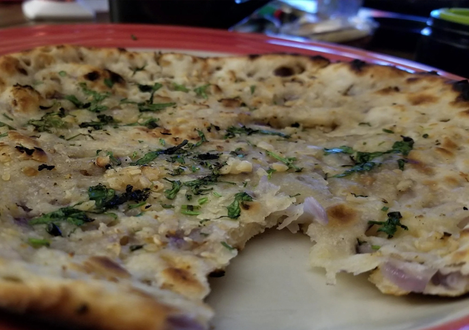
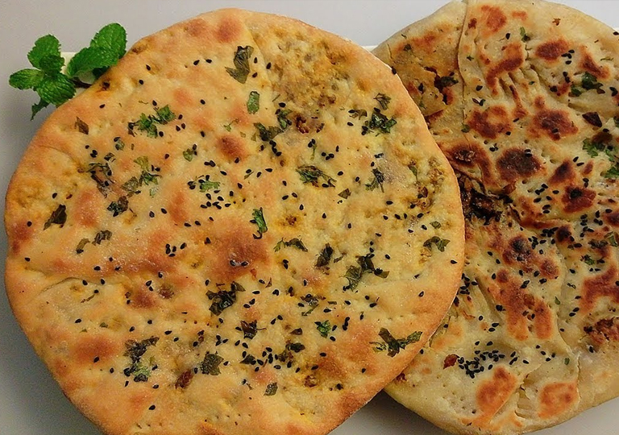
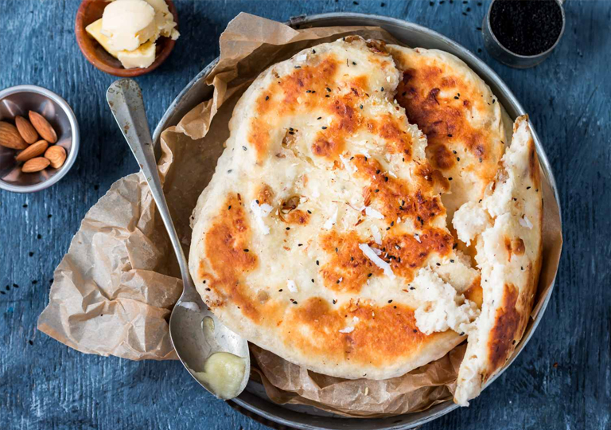
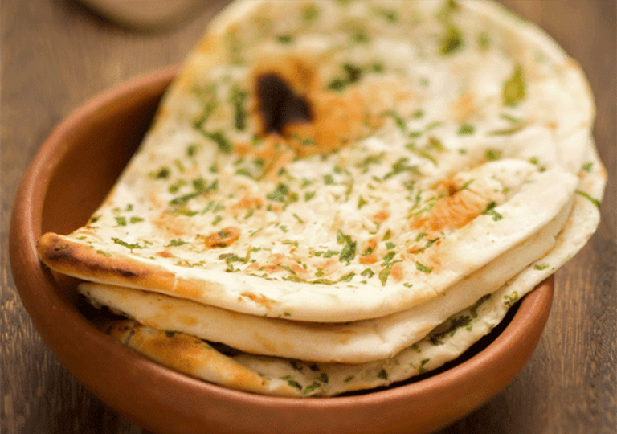

Different Types of Naan Worth Eating

Naan is an Indian flatbread made up of refined flour or pure maida. It is believed to have originated from South and Central Asia. It is extremely popular in India with gravy dishes as it is not too heavy and tastes delicious.
Although the ingredients used in naan don’t differ a lot, there are several types of naan available in the marketplace. The major difference among the different types is due to the stuffing or baking method. Naans can be oven-baked, Tandoor baked, or Tawa Baked.
Here’s a list of the different types of naan worth eating.
Table of Contents
- Butter Naan
- Laccha Naan
- Garlic Naan
- Paneer Naan
- Pudina Naan
- Chili Cheese naan
- Amritsari Naan
- Aloo Matar Naan
- oven-baked Naan
- Onion Naan
- Stuffed Naan
- Egg Naan
- Keema Naan
- Peshawari Naan
- Garlic Methi Naan
- Amritsari Choor Choor Naan
1. Butter Naan
Butter Naan is one of the most loved naans in India. You could judge this from the fact that this naan is usually the only one served in most of the weddings. The use of butter over this naan makes it soft and easy to chew.
2. Laccha Naan

Laccha Naan has many laccha or layers in it. A few major ingredients of this naan are Refined Flour, Baking Powder, Curd or Buttermilk for fermentation. Its multiple layers give it a distinct texture which is enjoyed by many.
3. Garlic Naan
Garlic naan is not everyone’s cup of tea. However, a person who has a taste for garlic can not resist this dish. Garlic is the key ingredient of this naan apart from the usual ingredients like Refined Flour, Baking Powder, Curd or Buttermilk (for fermentation).
4. Paneer Naan
Paneer Naan is a favorite among the kids as they love paneer. Paneer is healthy too as it contains a significant amount of protein. Apart from the paneer stuffing, the other ingredients are similar to other naans. You can serve this protein-rich paneer naan with any gravy dish.
5. Pudina Naan

Mint or Pudina works great as an additional flavor to the traditional naan. Pudina naan is stuffed with lots of pudina and pudina sprinkled over it as well. Besides some Pudina for the stuffing and topping, other ingredients remain the same as for the regular naan.
6. Chili Cheese naan

Chili Cheese Naan is for the lovers of spice. The chili cheese naan has lots of chilies sprinkled over it while cheese is used for its stuffing. Cheesy on the inside and spicy on the top, this naan can be enjoyed with any gravy.
7. Amritsari Naan

Amritsari Naan is a common naan. It is thick and rubbery in structure with lots of butter over it. Coriander is also sprinkled as a topping on the hot naan, this way it stays on the surface and adds a nice flavor to it.
8. Aloo Matar Naan

This aloo matar naan might just be a simpler variant but it tastes so well that you can eat it even without any gravy. However, Punjabis prefer to have this naan with gravy dishes. To make this naan, you only need aloo and matar for the stuffing apart from the regular ingredients.
9. Oven-Baked Naan

Naan can be baked in an Oven, Tandoor or Tawa. This oven-baked naan gives you an added health benefit as it does not contain any excess oil. The only difference between this naan and a regular one is the baking procedure. Thus, all the ingredients remain the same.
10. Onion Naan

Onion Naan, quite simply, is a naan with onions. You will find a lot of finely chopped onions mixed with some spices in its stuffing. You can devour this naan with gravy dishes or chaps. Besides the onion stuffing, this naan features all the regular ingredients.
11. Stuffed Naan
Stuffed Naan is named so because it does not have a single stuffing but a mixture of several ingredients which get fused in your mouth when you eat this naan with a gravy. Some major ingredients used for the stuffing are parsley, cauliflower, paneer or cottage cheese, methi, etc.
12. Egg Naan
Egg Naan is one of the few non-vegetarian variants of the dish. You can have a half-fried or beaten egg on top of this naan. The major ingredients of an egg naan, just like a regular naan, are Refined Flour, Baking Powder, Curd or Buttermilk (for fermentation).
13. Keema Naan

Keema Naan can be either non-veg or veg, allowing everyone to enjoy the taste of this naan. In the non-veg keema naan, you will find mutton or chicken keema stuffing. In the vegetarian version, you can have cauliflower keema stuffing. Parsley also gets sprinkled on the top of this naan which adds a nice smell to this naan.
14. Peshawari Naan

Peshawari Naan, like its royal name, is a royal naan because of its dry fruit stuffing. You can add the dry fruits of your choice and use other regular ingredients like Refined Flour, Baking Powder, Curd or Buttermilk (for fermentation) to make this naan.
15. Garlic Methi Naan

Garlic Methi naan, just as the name says, is made of a combination of garlic and methi. Thus, you get to experience the taste of both methi and garlic with this naan. They both blend together to make a delicious naan.
16. Amritsari Choor Choor Naan
Amritsari Choor Choor Naan obviously finds its origin in Amritsar. This naan gets served with a lot of butter on it and gets the name ‘choor choor’ because it is crushed with the palm before being served, making this naan extra delicious as the whole naan soaks in the butter.
Conclusion
So, the next time you go out for a meal, you would know which new naan to try. You can pick any option from this list that matches your taste.
To read more of such interesting content and browse our range of healthy products visit our website

Vikram Roller Flour Mills Limited is a pioneer name in the Agro-products manufacturing, packaging, and delivery in India. The company specializes in manufacturing supreme quality wheat products that are consumed by top-level bakers, caterers and FMCG suppliers in the country.
Know More About Us